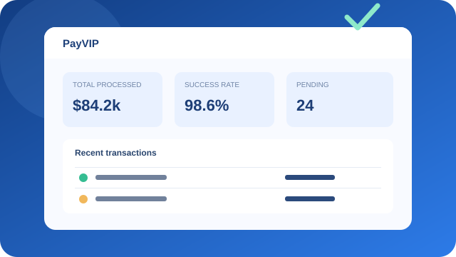

⌘
Frontend
Building responsive interfaces and application experiences.
Angular 10JavaScriptTypeScriptHTML5CSS3jQuery
SENIOR FULL STACK DEVELOPER · UJJAIN, INDIA
I'm Gaurav Panchal — a Senior Full Stack Developer with 10 years of experience building and maintaining web applications, CRM platforms and REST API-driven solutions.

My experience spans frontend and backend development, API integration, debugging, application maintenance and ongoing product improvements.
I enjoy understanding business requirements, solving practical engineering problems and collaborating with teams to deliver software that works reliably.
Core technologies and tools from my professional experience.
Building responsive interfaces and application experiences.
Developing application logic and server-side functionality.
Connecting applications, services and data.
Tools supporting collaboration and development.
Using AI assistants to support code analysis, development and problem-solving.
A selection of projects and platforms from my professional experience.
A dealership-focused CRM platform supporting business processes and operational workflows.
Contributing to frontend and backend application development, functionality maintenance, REST API integration, debugging and ongoing improvements across the platform.
Real estate platform connecting homebuyers, sellers and agents. Contributed to CRM functionality and role-based access management across HouseJet, NXLead, ISA and Manage components.

Digital service platform focused on improving accessibility and communication for deaf and hard-of-hearing users.

Transaction management solution supporting deposit and withdrawal workflows based on transaction amounts.

Customer review management solution designed to help businesses manage their online reputation.

Application featuring user authentication, role-based access, product search and filtering, and CRUD operations across users, products, orders and properties.
Professional experience in developing and maintaining web applications and business software.
Ujjain, Madhya Pradesh
Working on DP360 CRM, contributing across Angular 10, CakePHP, PHP, MySQL, REST API integration, debugging and application improvements.
Indore, Madhya Pradesh
Contributed to software development projects as a Junior Software Developer.
AIT, Ujjain, Madhya Pradesh
Interested in discussing web application development, full stack roles or new opportunities.
gaurav441109@gmail.com ↗